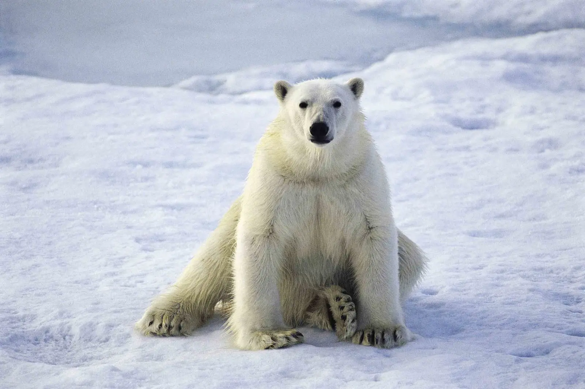

Зовнішній вигляд
Білий ведмідь має масивне тіло, видовжену шию, невеликі округлі вуха, короткий хвіст і дуже широкі лапи. Широкі ступні допомагають розподіляти вагу на снігу та кризі, а також працюють як «весла» під час плавання.
Хутро здається білим, але може мати жовтуватий відтінок, особливо влітку. Під хутром розташований товстий шар жиру, який зберігає тепло в арктичному кліматі.
- довжина тіла: приблизно 1,8–2,5 м;
- вага: 150–800 кг;
- швидкість бігу: до 40 км/год;
- забарвлення: біле або кремове.
